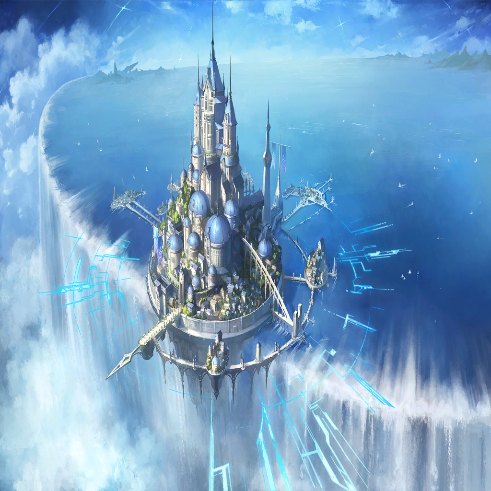

|
 |
| 過去のイコーナ |
おや、そこにいるのは―― |

アドレイ |
…っ!! |
| 過去のイコーナ |
ああ、やっぱりアドレイだ
ずいぶん大きくなったねえ |
アドレイ |
なんで――
なんで当たり前の顔して
声かけてんだよ!? |
アドレイ |
せめてもっと驚け!! |
 |
| 過去のイコーナ |
ま、私からすれば
簡単な推測なんだよコレは |
| 過去のイコーナ |
クェンスの願いは、
過去への回帰だったからね |
| 過去のイコーナ |
それがどんな形であれ、
未来の君が私に会いに来る可能性は
あった |
アドレイ |
…完全に、事故だけどな |
| 過去のイコーナ |
そうかー、クェンスくんは
勧誘に失敗したんだねえ |
| 過去のイコーナ |
まあ彼、口下手だしね
ペラペラ喋るわりには、大事なことは
なんにも伝えられない男だし |
アドレイ |
ヒドくね…
仲間だったんだろ？ |
| 過去のイコーナ |
仲間だからこそ、さ |
| 過去のイコーナ |
まあ、私たちは同志ではあっても、
同じ目的を共有する仲じゃなかった |
| 過去のイコーナ |
お互いがお互い、
利用し合う関係だったけどね |
アドレイ |
…どうやったら戻れると思う？ |
| 過去のイコーナ |
おやおや、それ私に聞く？
未来で敵対することが
決まってるのに～？ |
アドレイ |
それは…そうだけどっ！ |
アドレイ |
そもそも、なんで俺はこの時間に…
クェンスが行きたかったのは、
罪獣が生まれる前だろ…？ |
| 過去のイコーナ |
…まあ、時空操術の理論は
私も知ってるけどね |
| 過去のイコーナ |
おそらく、だけど――
クェンスくんの術式はそもそも、
“過去への想い”を起点にしてるんだ |
アドレイ |
想い？ |
| 過去のイコーナ |
そう、想い |
| 過去のイコーナ |
過去にあった、未練や後悔――
それを変えたいと強く思えば思うほど
術式の強度が増していく |
| 過去のイコーナ |
――でも、
それが途中で途切れたら？ |
アドレイ |
…なんらかのトラブルがあって、
クェンスが術の主導権を手放した？ |
| 過去のイコーナ |
そう、そう見るね私は！
その結果、君たちは個々の未練に引かれ
別々の時間に“落ちて”しまった |
| 過去のイコーナ |
それが今、君がここにいる顛末さ
推測だけど自信あるよ！ |
| 過去のイコーナ |
…私にそんなに
会いたかったんだねえ、アドレイ？ |
アドレイ |
家族に会いたいって思うのは、
当然だろ |
| 過去のイコーナ |
死に別れた家族に、でしょ？ |
アドレイ |
…まだ死んでないだろ |
| 過去のイコーナ |
いいや、もう死んだも同然だね
君が君のまま、
この時間に落ちて来た時点で―― |
| 過去のイコーナ |
私の敗北は決まっている |
| 過去のイコーナ |
おめでとう、アドレイ
初めての姉弟喧嘩は
君の勝ちってわけだ！ |
アドレイ |
…そっか |
| 過去のイコーナ |
…もう行くのかい、アドレイ |
アドレイ |
…うん |
アドレイ |
これ以上、頑固な義姉を
説得するのは疲れちゃったからさ |
アドレイ |
…やっぱ、
“未来を変える”気はないんだな
イコーナは |
| 過去のイコーナ |
当たり前じゃない
私はね、アドレイ。もう人生死ぬまでの
計画はしっかり立ててあるんだよ |
| 過去のイコーナ |
例えどんな選択があって、
どこで躓いて、
どんな風に死んでも結論は同じ |
| 過去のイコーナ |
だってそうでしょ？
“天才”のイコーナさんが、
最善手を打たないわけがない！ |
| 過去のイコーナ |
だからきっと、
それは最善の結果だったんだよ
アドレイ |
アドレイ |
………… |
| 過去のイコーナ |
あー、また泣くの？
そりゃイコーナさんは優しいから、
いくらでも慰めてあげるけど… |
アドレイ |
…泣かねえよ
もう、十分泣いたあとなんだから |
| 過去のイコーナ |
…そっか
じゃあ、どうすればいいかはわかるね？ |
アドレイ |
決まってる |
アドレイ |
俺は前に進むんだ
どんな時も、諦めずに |
アドレイ |
きっと明るい未来があるはずだって、
そう信じて進み続ける！ |
| 過去のイコーナ |
よろしい！
じゃあ―― |
| 過去のイコーナ |
いってらっしゃい、アドレイ
お土産、期待してるからね～？ |
アドレイ |
――ねえよ、そんなもん
言っただろ？ 俺は未来に進むんだ |
アドレイ |
…いちいち振り返って、
過去に戻る真似なんかしねえよ |
| 過去のイコーナ |
…うん、それでこそ私の義弟だ！ |
アドレイ |
え？ お、わぁっ!? |
アドレイ |
ああ、――そっか、この声―― |
アドレイ |
アンタなのか、ニムル！ |
|  |
| 過去のアンデクス |
ここが、嫉妬の罪域か―― |

ダフネ |
あの… |
ダフネ |
よかったんですか？
サタンもレヴィアタンも倒さずに、
ここまで来てしまって… |
| アンデクス |
あー…いや、なんだ |
| アンデクス |
もしかしたら変えられるかもって想いも、
確かにあった |
| アンデクス |
けど、さ――
変えちまったら、アンタらとの冒険が
なくなっちまうんだと思うと、な |
ダフネ |
アンデクスさん… |
| アンデクス |
俺はやっぱ、薄情だなぁ…
幻滅させたか？ |
ダフネ |
そんなこと、ありません |
ダフネ |
だって、私も…そう思いました
あの冒険を、
なかったことにしたくないって |
ダフネ |
私たち、騎士失格でしょうか… |
| アンデクス |
かもなぁ。だが… |
| アンデクス |
“ここから先”は、必ず守る |
ダフネ |
ええ…！ |
ダフネ |
え？ これって… |
| アンデクス |
――わからん。わからんが…
そもそもこの状況自体が
俺の頭じゃ理解不能だ |
| アンデクス |
だから、まず飛び込んでから考える！ |
ダフネ |
えぇっ!?
あ、待ってください…っ！ |
 |
| アンデクス |
ははっ！ やっぱりそうか！
俺の勘は当たるな、やっぱ！ |
ダフネ |
あ――この気配、ニムルさんの…？ |
 |

エウラリア |
――うん、楽しかった |
エウラリア |
スーガの森…穢れに堕ちる前の、
ワタシの故郷 |
エウラリア |
今は、まだきっと
復興の途中だろうけど… |
エウラリア |
きっといつか、
もとの姿を取り戻してあげるからね？ |
エウラリア |
うん、やっぱりだ
この先から、ニムルくんの『声』が聞こえる |
エウラリア |
それじゃあ、行ってきます…！ |
 |

ミナリオ |
すまねえ、魔女の師匠！
俺がへましたばっかりに… |

アンブロシア |
気にするでない
ワシも結構暇じゃったからな
しかし… |
アンブロシア |
“時空操術、対罪術式点火” |
アンブロシア |
次から次に湧いて来るのう！
これじゃから、ヒトの多い罪域は！ |
ミナリオ |
あー、ウチもベルフェゴールが暴れた時は
こんな感じだったなぁ…
そっちは違ったのかい？ |
アンブロシア |
…色欲罪域＜ルクスリア・ベルト＞の人間、
今ワシだけじゃからな |
ミナリオ |
あ、なんかすまん… |
アンブロシア |
そこで申し訳なさそうにされると
よけい惨めなんじゃが!? |
アンブロシア |
じゃがまあ、
そろそろ本気の出しどころか |
ミナリオ |
うお、なんだ…杖？ |
アンブロシア |
ふ――“ライブラ”の二号機じゃ
そろそろ馬鹿弟子たちが、
オリジナルを壊しとる頃じゃと思ってな |
アンブロシア |
…まあ、今はマギルのチャージとか
全然じゃから、
時空操術の補助にしかならんが |
アンブロシア |
“刻よ廻れ、永久に永久に――” |
ミナリオ |
うお、すげえ！ |
アンブロシア |
今じゃ、バイクマン！
折角じゃから突っ込んで来い！ |
ミナリオ |
それじゃ、お言葉に甘えて―― |
ミナリオ |
かっ飛ばすぜ…！ |
アンブロシア |
さて、あとは―― |
| ？？？ |
あぁぁぁあぁぁぁぁ～～～!? |
| ？？？ |
えぇぇぇぇぇぇえぇ～～～!? |
アンブロシア |
………… |

メラ |
あたたた…制御ミスっちゃった |

ニクス |
…メラに座標指定任せたの、
間違いだったね… |
メラ |
何を～？
ニクスだって、
転移先の座標読み違えてたじゃない！ |
ニクス |
いやいや、飛行術式は準備してたよ？
メラがマギル使い過ぎて
発動しなかっただけで！ |
メラ |
ああ言えばこう言う～っ！ |
ニクス |
それは僕の―― |
|
メラ |
ふぎゃっ!? |
ニクス |
あだっ!? |
|
アンブロシア |
まったく――無駄に心配させおって |
メラ |
………… |
ニクス |
………… |
| メラ・ニクス |
お師匠様!? |
 |
| 罪獣マンモン |
滅びよ、滅びよ、滅びよ…！ |

ニムル |
く――“我は色欲の門を超えし者！” |

ワギナオ |
合わせる！
“我は無形――故に！” |
ニムル |
攻撃が、激しい…！
断罪の武具があっても、
懐に入る隙がなければ…！ |
| クベラ |
ならば、この身を盾に圧し通るほか―― |
ニムル |
いや、ダメだ！ |
ニムル |
思い出せ、クベラ殿！
マンモンの穢れは、
竜種すら堕とし尽くした |
ニムル |
ヒトの身で受ければ、
さすがの貴方でも刃を振るう前に
堕罪者となるぞ！ |
| クベラ |
なるほど、そうか |
| クベラ |
…己が身を守り、他者の命をも守る
思いのほか難しい戦いだな、コレは |
ニムル |
だが、“だからこそ”見える活路もある |
| クベラ |
ほう…？ |
ニムル |
――感じるんだ。扉を通じて
俺たちとともに戦ってくれた仲間たちの、
意志を―― |
ニムル |
（そうだ、俺はこれまで
ひとりで戦ってきたわけじゃない） |
ニムル |
多くのヒトに助けられた
多くの出会いが、俺を強くしてくれた
そして―― |
アドレイ |
――ニムル！ |
ダフネ |
ニムルさん！ |
| アンデクス |
ニムル!! |
エウラリア |
ニムルくん…！ |
ニムル |
聞こえる。希望の胎動が
“仲間たち”が、
扉の向こうで俺を待っている――ならば |
ニムル |
“我は――己が裡に手を伸ばす” |
ニムル |
“我が身は鍵――扉を開く鍵なれば
今こそここに、時と空間を飛び越えて！
再び絆を手繰り寄せん――!!” |
|
|
| 罪獣マンモン |
無駄な足掻きを――！ |
ダフネ |
お待たせしました、ニムルさん！ |
| アンデクス |
だが、クライマックスには間に合ったな！
…だろ？ |
ニムル |
ダフネ、アンデクス… |
エウラリア |
お待たせ、ニムルくん
ちょっといい夢を見て来たから、
張り切っちゃうね？ |
ニムル |
エウラリア！ |
| 罪獣マンモン |
オォォォォォォォォォォォォ！ |
アドレイ |
へへッ！
重量級なら、こっちにもいるぜ…！ |
ニムル |
アドレイ…！ |
メラ |
おおっと、このメラちゃんを
忘れてもらっては困りますね～!? |
ニクス |
お兄さん！ 罪獣の動きは僕らが！ |
ニムル |
クベラ殿…！ |
| クベラ |
――承知！ |
| 罪獣マンモン |
ぬぅぅ!! |
| クベラ |
我が一刀、我が専心をここに！ |
| クベラ |
墜ちよ、獣よ――!! |
|
|
| 罪獣マンモン |
オォォォォォォォォォォォォ!! |
| クベラ |
ぬう…!? |
ワギナオ |
な――断罪の武具を… |
ニムル |
折った…!? |
| 罪獣マンモン |
笑止！ 未熟！
その程度の業で我が罪を断じようとは…！ |
| 罪獣マンモン |
これが、その強欲の末路だ！
堕ちよ、武神クベラ…!! |
| クベラ |
――ふ |
| 罪獣マンモン |
…？ 死を前にして狂ったか―― |
| クベラ |
錬鉄師ク・イエナの作たる
理刀『タウラス』は対の双角！
すなわち―― |

ク・イエナ |
この隙こそを、待っていた――!! |
| 罪獣マンモン |
――――何!!? |
ク・イエナ |
この武具こそ、我が決意の証！
どのような時代、
どのような場所であろうと！ |
ク・イエナ |
我が手に鍛えられし武具は、
あらゆる邪悪を断ち滅ぼす…！ |
ク・イエナ |
例え今はそうでなくとも、誓おう！
俺はいずれ、
“そう呼ばれる錬鉄師”となる！ |
ク・イエナ |
これがその、証の刃だ――!! |
| 罪獣マンモン |
ギ、エァァァァァァァァァァ!? |
ニムル |
――罪獣マンモンの、罪の剥奪を確認した
行くぞ、皆！
ここで、かの罪獣の夢想を終わらせる！ |
ニムル |
今こそヒトの力を見よ、マンモン…!! |